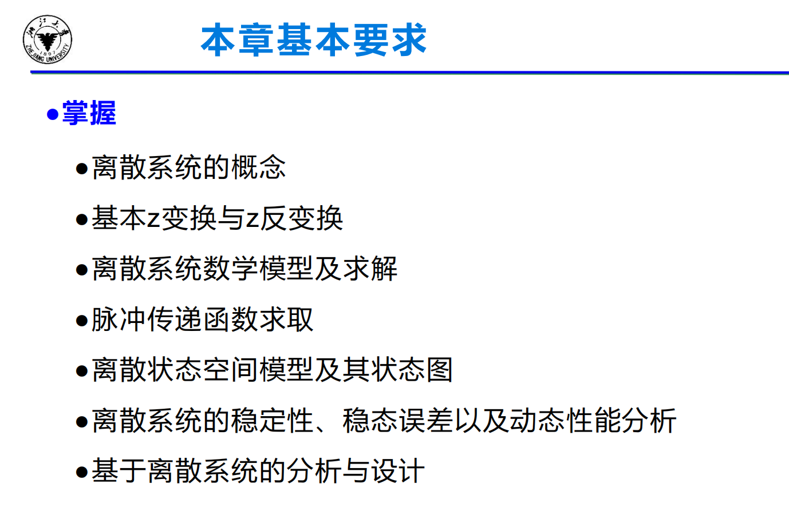
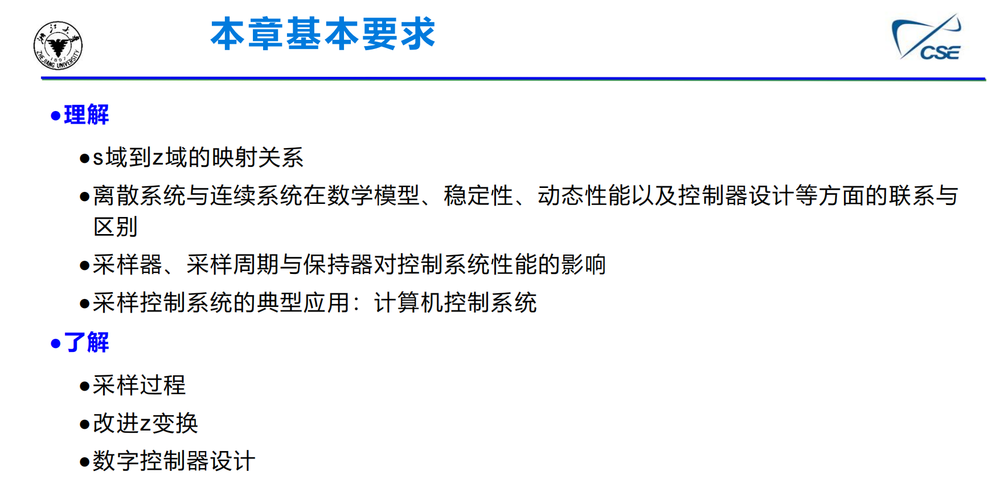

章节要求


概念
连续系统中所有环节的信号均为时间变量的连续函数。换言之，这些信号在全部时间上都是已知的。
采样系统是对来自传感器的连续信息在某些规定的时间瞬时上进行取值。
数字控制系统是一种以数字计算机为控制器去控制具有连续工作状态的被控对象的闭环控制系统。
模拟信号是时间和幅值上都连续的信号。
脉冲信号是时间上离散而幅值上连续的信号。
保持器接收脉冲信号输入，将其复原为连续阶梯信号。采样频率很高时，复原信号接近原始信号。
系统参数
采样周期 T
采样持续时间 \(\tau\)
采样频率 \(f_s=\frac{1}{T}\)
采样角频率 \(\omega_s=2\pi f_s=\frac{2\pi}{T}\)
Z变换
Z反变换的求解方法
1. 长除法
对如\(\frac{z^2+z}{z^2-2z+1}\)这样的式子，分子分母最高次相同，可以直接使用长除法。

对如\(\frac{10z}{(z-1)(z-3)}\)这样的式子，分子分母次数不同，可以用\(\frac{1}{z}\)的长除法。